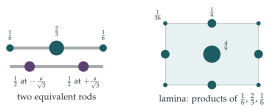

A body of mass \(m\) and centre of mass \(O\) is said to be dynamically equivalent to a system of particles of total mass \(m\) and centre of mass \(O\) if the moment of inertia of the system of particles is the same as the moment of inertia of the body, about any axis through \(O\). Show that this implies that the moment of inertia of the system of particles is the same as that of the body about any axis.
Show that a uniform rod of length \(2a\) and mass \(m\) is dynamically equivalent to a suitable system of three particles, one at each end of the rod, and one at the midpoint.
Use this result to deduce that a uniform rectangular lamina of mass \(M\) is dynamically equivalent to a system consisting of particles each of mass \(\frac{1}{36}M\) at the corners, particles each of mass \(\frac19M\) at the midpoint of each side, and a particle of mass \(\frac49M\) at the centre. Hence find the moment of inertia of a square lamina, of side \(2a\) and mass \(M\), about one of its diagonals.
The mass per unit length of a thin rod of mass \(m\) is proportional to the distance from one end of the rod, and a dynamically equivalent system consists of one particle at each end of the rod and one at the midpoint. Write down a set of equations which determines these masses, and show that, in fact, only two particles are required.
The hook
How does a uniform rod respond to being pushed and spun? It turns out that, for every purpose in mechanics, a rod behaves exactly like three point masses: one-sixth of its mass at each end and two-thirds at the middle. Nothing you can do to the rod (push it, spin it about any axis) distinguishes it from the three particles.
The numbers \(\frac16\), \(\frac23\), \(\frac16\) may look familiar. They are the weights in Simpson’s rule, \(\int_{-a}^{a}f \approx 2a\bigl(\frac16f(-a) + \frac23f(0) + \frac16f(a)\bigr)\), the numerical integration method you may have met at A level. This is no coincidence: a dynamically equivalent system and a numerical integration rule are solving the same problem.
Moments of inertia were removed from the STEP specification in 2019. The moment of inertia of a body about an axis is \(\sum m_id_i^2\), the sum of each mass times the square of its distance from the axis (an integral for a continuous body). A uniform rod of mass \(m\) and length \(2a\) has moment of inertia \(\frac13ma^2\) about a perpendicular axis through its centre. The parallel axis theorem says that the moment of inertia about any axis is the moment about the parallel axis through the centre of mass plus \(md^2\), where \(d\) is the distance between the axes.
Before you start
Two systems have the same mass, the same centre of mass, and the same moment of inertia about every axis through it. Why does the parallel axis theorem then give the same moment of inertia about every other axis too?
For any axis, both moments of inertia equal (moment about the parallel axis through \(O\)) \(+ md^2\). The first terms agree by assumption, and \(m\) and \(d\) are the same for both systems.■
Working it through
Stage 1 The rod
Put masses \(p\) at each end and \(q\) at the middle. By symmetry the centre of mass is right. What do the total mass and the moment of inertia about a perpendicular axis through the centre require?
We need \(2p + q = m\), and the moment of inertia about a perpendicular axis through the middle must be \(\frac13ma^2\): \(2pa^2 = \frac13ma^2\). So \(p = \frac16m\) and \(q = \frac23m\).
Does this work for every axis through the centre, not just the perpendicular one?
For an axis through the centre at angle \(\psi\) to the rod, a point at distance \(r\) along the rod is at distance \(r\sin\psi\) from the axis. So every moment of inertia (rod or particles) is \(\sin^2\psi\) times the value for the perpendicular axis, and the two agree for all \(\psi\). (Axes not in a plane containing the rod work the same way: only the distance of each point from the axis matters, and for points on a line through \(O\) this is proportional to \(r\).) So the rod is dynamically equivalent to masses \(\frac16m\), \(\frac23m\), \(\frac16m\).■
Stage 2 The rectangle
Cut the lamina into thin strips parallel to one side. Replace each strip by its three equivalent particles. What do you get, and what can you do next?
Each thin strip is a rod, equivalent to \(\frac16\), \(\frac23\), \(\frac16\) of its mass on the left edge, the centre line and the right edge. Adding over all the strips, the lamina is equivalent to three uniform rods (along the left edge, the middle and the right edge) with masses \(\frac16M\), \(\frac23M\), \(\frac16M\). Now replace each of these rods by three particles in the same ratio. The mass at each point is a product of two fractions (Figure 11.7.1): \[\text{corners: } \tfrac16 \cdot \tfrac16 = \tfrac{1}{36}, \qquad \text{edge midpoints: } \tfrac16 \cdot \tfrac23 = \tfrac19, \qquad \text{centre: } \tfrac23 \cdot \tfrac23 = \tfrac49,\] all times \(M\).■
(Strictly, each replacement must preserve the moment of inertia about every axis through the centre of the whole lamina, which it does: each replacement keeps the mass, the centre of mass and the moments of inertia about axes through the centre of mass of the piece, and the parallel axis theorem does the rest.)
Stage 3 The square about its diagonal
For a square of side \(2a\), the diagonal passes through two corners and the centre, which contribute nothing. The other two corners are at distance \(\sqrt2a\) from it, and the four edge midpoints at distance \(\frac{a}{\sqrt2}\). So \[I = 2 \cdot \tfrac{1}{36}M \cdot 2a^2 + 4 \cdot \tfrac19M \cdot \tfrac{a^2}{2} = \tfrac19Ma^2 + \tfrac29Ma^2 = \tfrac13Ma^2. \qed\] This is the same as the moment of inertia about an axis through the centre parallel to a side. (That is no accident: for a square, all axes through the centre in its plane give the same answer, by a symmetry argument in the exercises.)
Stage 4 A non-uniform rod
Let the rod have length \(L\) and density \(\frac{2mx}{L^2}\) at distance \(x\) from one end. Put masses \(p_0\), \(p_1\), \(p_2\) at \(x = 0\), \(\frac L2\), \(L\). Matching the total mass, the centre of mass and the moment of inertia about the end gives three equations. What are they?
The rod has total mass \(m\), first moment \(\int_0^L x \cdot \frac{2mx}{L^2}\,\mathrm{d}x = \frac23mL\) and second moment \(\int_0^L x^2\cdot\frac{2mx}{L^2}\,\mathrm{d}x = \frac12mL^2\) about the light end. Matching these: \[p_0 + p_1 + p_2 = m, \qquad \tfrac12Lp_1 + Lp_2 = \tfrac23mL, \qquad \tfrac14L^2p_1 + L^2p_2 = \tfrac12mL^2.\] Subtracting the third (divided by \(L^2\)) from the second (divided by \(L\)) gives \(\frac14p_1 = \frac16m\), so \(p_1 = \frac23m\), then \(p_2 = \frac13m\) and \(p_0 = 0\). Only two particles are needed: \(\frac23m\) at the midpoint and \(\frac13m\) at the heavy end.■

Looking back
Match moments. Dynamical equivalence means matching the zeroth, first and second moments of the mass distribution.
Build up dimension by dimension. A rectangle is a rod of rods, so its weights are products.
Count equations and unknowns. Three moments to match, three unknown masses; and sometimes a solution happens to have a zero.
What’s really going on
Simpson’s rule
Matching moments of a mass distribution is the same problem as designing a numerical integration rule. A rule \(\int_{-a}^{a}f(x)\,\mathrm{d}x \approx w_0f(-a) + w_1f(0) + w_2f(a)\) that is exact for \(f = 1, x, x^2\) must satisfy \[w_0 + w_1 + w_2 = 2a, \qquad -aw_0 + aw_2 = 0, \qquad a^2w_0 + a^2w_2 = \tfrac23a^3,\] exactly the conditions for the rod (with \(f = 1, x, x^2\) playing the roles of mass, first moment and moment of inertia). The solution is \(w = 2a(\frac16, \frac23, \frac16)\): Simpson’s rule. A bonus comes from symmetry: the rule is also exact for \(f = x^3\), since both sides vanish, so Simpson’s rule integrates cubics exactly, and its error for smooth functions is proportional to the fourth derivative. A rod therefore matches its three particles not just in mass, centre and moment of inertia, but in the third moment too.
Gaussian quadrature and the inertia tensor
If the positions as well as the masses are free, two particles suffice: half the mass at each of the points \(\pm\frac{a}{\sqrt3}\). Check: \(2 \cdot \frac12m \cdot \frac{a^2}{3} = \frac13ma^2\). This is the two-point Gauss–Legendre rule, \(\int_{-a}^{a}f \approx a\bigl(f(-\frac{a}{\sqrt3}) + f(\frac{a}{\sqrt3})\bigr)\), which is also exact for cubics. Carl Friedrich Gauss showed in 1814 that \(n\) cleverly placed points can integrate polynomials of degree \(2n - 1\) exactly, and Gaussian quadrature is now a standard method of numerical analysis.
In mechanics, the moments of inertia of a body about all axes through its centre are encoded in a symmetric \(3 \times 3\) matrix, the inertia tensor. Two bodies with the same mass, centre of mass and inertia tensor respond identically to all forces, which is why engineers can replace a complicated part by a few point masses in a simulation. The eigenvectors of the inertia tensor are the principal axes, the axes about which a body can spin steadily.
The thinking skill
If two systems agree in every quantity that matters for the problem, replace the complicated one by the simple one.
Here only three moments mattered, so a continuous rod could be replaced by three particles. At university, this idea appears as Gaussian quadrature, as multipole expansions in electromagnetism and gravitation (far away, only a few moments of a charge or mass distribution matter), and as the method of moments in statistics.
Try this next
Simpson’s rule. Use Simpson’s rule with a single interval to estimate \(\int_0^1\frac{\mathrm{d}x}{1 + x^2}\), and compare with \(\frac\pi4\). Check that the rule is exact for \(\int_{-1}^{1}x^3\,\mathrm{d}x\) and \(\int_{-1}^{1}x^2\,\mathrm{d}x\) but not for \(\int_{-1}^{1}x^4\,\mathrm{d}x\).
All axes alike. Show that the moment of inertia of a square lamina about any axis through its centre in its plane is \(\frac13Ma^2\). (Hint: the nine equivalent particles are symmetric under rotation by \(90^\circ\); what does that say about a quadratic expression in \(\cos\psi\) and \(\sin\psi\)?)
A triangle. Show that a uniform triangular lamina of mass \(M\) is dynamically equivalent to three particles of mass \(\frac13M\) at the midpoints of its sides.
A solid cube. Find a dynamically equivalent system of \(27\) particles for a uniform solid cube, and use it to find the moment of inertia of a cube of side \(2a\) about an edge.
Further reading
Daniel Kleppner & Robert Kolenkow, An Introduction to Mechanics (Cambridge University Press), the chapter on rigid bodies and moments of inertia.
Endre Süli & David Mayers, An Introduction to Numerical Analysis (Cambridge University Press), the chapters on numerical integration, including Simpson’s rule and Gaussian quadrature.
Philip Davis & Philip Rabinowitz, Methods of Numerical Integration (Dover). The classic reference.